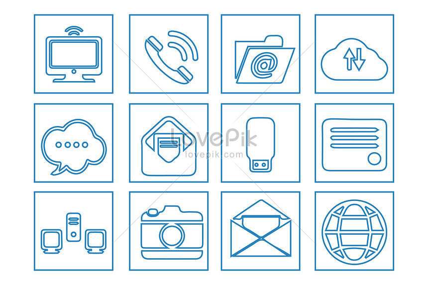

Les techniques de l'information et de la communication (TIC)
Les TIC regroupent l'ensemble des outils mis en place pour manipuler, traiter, produire, faire circuler, transmettre, échanger et permettre la diffusion de l'information et la présenter sous forme vocale, images, électromagnétiques ou acoustiques acoustiques La naissance des TIC est due notamment à la convergence de l'informatique, des télécommunications, des électroniques et de l'audiovisuel.
Les catégories des TIC :
La téléinformatique
Qui est la science des méthodes, des équipements permettant l’échange d’informations numériques entre plusieurs systèmes informatiques.
Télécommunication
traitement du signal, transmission analogique, etc…, incluant les centres d'appels, la téléphonie mobile, le système GPS...
L’électronique
les composants, l'équipement grand public les télévisions lecteurs dvd...
Objectifs recherchés
La connectivité, La modularité, Une implantation et Une utilisation facile La fiabilité
Composants des TIC
La partie matérielle
-Pc portable, la télévision, le téléphone portable...
-Station de travail : toute machine qui envoyoie des données vers des réseaux...
La partie logicielle
-Les systèmes d’exploitation, les logiciels d’application et les différents composants matériels sans oublier les réseaux d’internet et de mobile
Caractéristiques
-La rapidité: dans la réalisation des activités.
-La décentralisation: du pouvoir, elles permettraient les agents à recevoir les informations se référant à son domaine.
-Un meilleur accès aux informations de toute ordre pour l'ensemble du personnel.
-La rationalité : donner un avantage pour l'entreprise.
-La mondialisation : car l'activité de l'entreprise n'est pas seulement locale ou régionale mais internationale grâce au tissu mondial de l'information.
-La répartition l’information circule entre un nombre élevés de stations.
-L’intensité on peut transmettre et recevoir des informations à tous moment

Caractéristiques
1)OBJECTIFS DE COMMUNICATIONS : Les objectifs de communication correspondent aux réactions que l‘on attend du récepteur.
2)SYSTEMES DE COMMUNICATION:
-Les partenaires de communication :l’émetteur, le récepteur
-Les vecteurs : le message, le média
-Les fonctions : codage, décodage, répense et feedback
3)LES TYPES DE COMMUNICATION
-La communication institutionnelle à communiquer sur l’image de marque de l’entreprise elle se réalise par la publicité, le sponsoring…
-La communication commerciale ou de produit :mettre en avant les performances et les avantages du produit.
4)LES SHEMAS DE COMMUNICATION :
-La communication interpersonnelle : d’une communication où un émetteur va transmettre son message à un destinataire.
-La communication de groupe : Un émetteur veut faire passer un message à plusieurs destinataires.
-La communication de masse : quand on s’adresse à un grand public par exemple la publicité.
5)MEDIA ET MULTIMEDIAS:
-Média :le moyen permettant la diffusion large et collective ( radio , tv..).
-Multimédia : des techniques et des produits qui permettent l'utilisation simultanée des modes de représentation de l'information (textes, sons, images).

Cette partie a été crée par :
L’étudiant de la TEAM WEBSITE:
NOM: HEBRI
PRENOM: Houssem
MATRICULE: 222238090909
DOMAINE: INFO 04 GROUPE 01
L’étudiant de la TEAM RESUME :
NOM: LAINAOUI
PRENOM: youcef
MATRICULE: 222231501406
DOMAINE: INFO 04 GROUPE 01